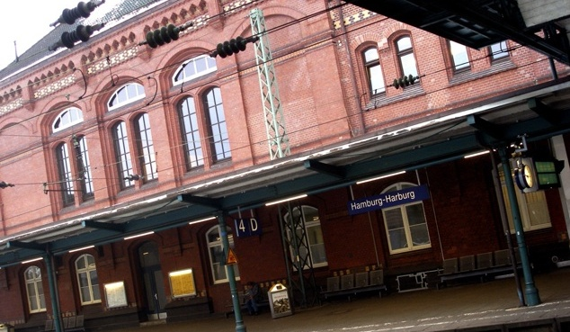

Das Stellwerk in Hamburg-Harburg
Als Location haben wir ein wunderbares „Stuffed Animal“ gefunden. Das ehemalige Lehrstellwerk im Bahnhof Hamburg-Harburg ist heute ein Jazz-Club. Am 21.2.10 waren wir dort zu einer verbalen Jam-Session zu Gast. Das Stellwerk ist gut erreichbar:
-
mit der Fernbahn zum Bahnhof Hamburg-Harburg oder
-
mit der S-Bahn: Die S3/S31 braucht von Hamburg-Hauptbahnhof nach Harburg 12 Minuten.
-
Hinterm Bahnhof gibt es auch ein Park&Ride Parkhaus.
-
Und dann zwischen Gleis 3 und Gleis 4.

Startseite RSE11Mediathek RSE10 Feed Impressum
RSE10 Programm Stellwerk Bilder Teilnehmer Banner Crew